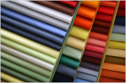
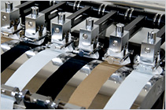
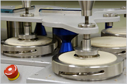
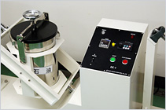

Textiles testing is determination of fundamental properties of textiles. The choosing of testing methods often depends on raw materials and its end uses.

Color fastness is determination of color transfer and color change degree. According to customer's requirements, there are many testing methods.
Color fastness to light, perspiration, water, washing, dry cleaning, rubbing, NOx gas, chlorinated water, transfer of dye, water spotting and color bleeding.

Color fastness to rubbing
Physical performance consists of determination of fabric strength, pilling and seam sliding, etc.
Testing methods varies according to raw materials and end uses of textiles. For example, test items of woven textiles include tensile strength, tear strength, slippage resistance, etc. Items of needle textiles include bursting strength. Besides, physical performance also contains determination of abrasion resistance, pile retention, stretch and recovery, pilling, etc.
Determination of tensile strength, tear strength, bursting strength, slippage resistance,pilling, snagging, abrasion resistance,pile retention, stretch and recovery and seam propety.
Testing methods varies according to raw materials and end uses of textiles. For example, test items of woven textiles include tensile strength, tear strength, slippage resistance, etc. Items of needle textiles include bursting strength. Besides, physical performance also contains determination of abrasion resistance, pile retention, stretch and recovery, pilling, etc.

Frictional strength test
Dimensional change is determination of shrinkage and stretch after washing, dry cleaning and ironing by home used washing machine, dry cleaning machine or other testing equipments.
Immersion, common washing method,barrel washing method, washing by home used washing machine, ironing, dry cleaning, commercial dry cleaning.

Dry cleaning
This test is aimed at checking whether fiber contents wrote on tag is correct or not. And when it comes to fiber unclaimed, fiber identification shall be carried out first, and then do the quantitative analysis. We can also do the resin identification for coating and paillette.
Fiber identification